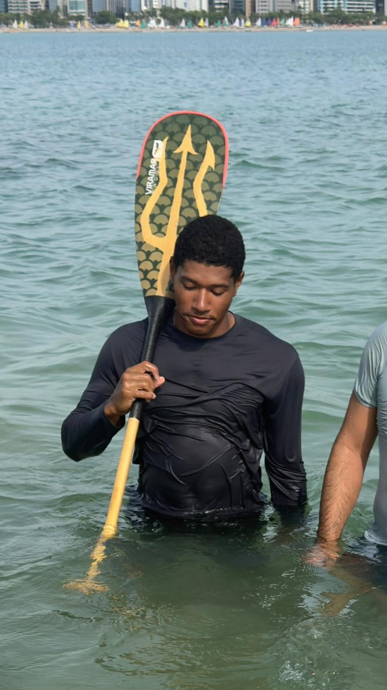
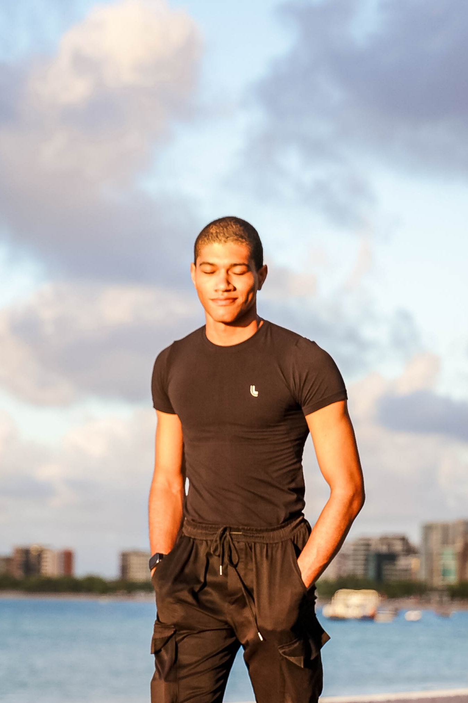

Olá!
Aqui reside meu projeto pessoal, sempre sujeito a mudanças e experiências.
Meu nome é Givaldo Batista da Silva Sobrinho, sou graduando de Engenharia da Computação na Universidade Federal de Alagoas e aprendiz de leme no Maceió Canoe Club.
Nas horas vagas eu danço, desenho, luto, escrevo e exploro projetos que tangenciam o escopo de meu ensino superior (Este próprio website e o servidor que o hospeda são exemplos de tais projetos).
ContactEntre em contato
PhotosFotos


